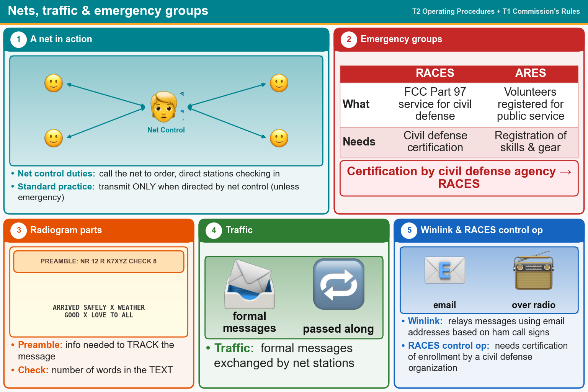

💡 Net control directs the net. RACES = civil defense with certification. ARES = registered volunteers.
📚 Key words
- Net
- A scheduled on-air meeting run by a Net Control Station, which calls it to order and directs who talks.
- Directed net
- Only transmit when net control tells you to, unless you're reporting an emergency.
- RACES
- Radio Amateur Civil Emergency Service. Part 97 service for civil defense. Needs certification by a civil defense organization.
- ARES
- Amateur Radio Emergency Service. Volunteers who registered their skills and gear to help in public service.
- Traffic
- Formal messages passed between net stations (a radiogram).
- Preamble / check
- Preamble = the message's tracking info. Check = the number of words in the text.
- Winlink
- Sends email over ham radio using call-sign email addresses.
Press Check on any question to see if you're right (it won't show the answer), or Grade at the bottom to grade the whole page.
T2C02
Which of the following are typical duties of a Net Control Station?
✔A.Call the net to order and direct communications between stations checking in
✘B.Ensure that all stations checking into the net are properly licensed for operation on the net frequency
✘C.Choose the regular net meeting time and frequency
✘D.All these choices are correct
T2C07
Which of the following is standard practice when you participate in a net?
✘A.When first responding to the net control station, transmit your call sign, name, and address as in the FCC database
✘B.Record the time of each of your transmissions
✔C.Unless you are reporting an emergency, transmit only when directed by the net control station
✘D.All these choices are correct
T2C04
What is RACES?
✘A.A radio contest held in a short period, sometimes called a “sprint”
✔B.An FCC Part 97 amateur radio service for civil defense communications during national emergencies
✘C.An international radio experimentation society
✘D.An emergency organization combining amateur radio and citizens band operators and frequencies
T2C06
What is the Amateur Radio Emergency Service (ARES)?
✘A.A group of licensed amateurs who are members of the military and who voluntarily agreed to provide message handling services in the case of an emergency
✘B.A training program that provides licensing courses for those interested in obtaining an amateur license to use during emergencies
✔C.A group of licensed amateurs who have voluntarily registered their qualifications and equipment for communications duty in the public service
✘D.A training program that certifies amateur operators for membership in the Radio Amateur Civil Emergency Service
T2C12
Which of the following requires certification by a civil defense agency?
✘A.SKYWARN
✘B.ARES
✘C.MARS
✔D.RACES
T1A10[97.407(a)]
Besides an FCC-issued amateur operator license, what is required to be the control operator of a Radio Amateur Civil Emergency Service (RACES) Station?
✘A.Membership in the Amateur Radio Emergency Service (ARES)
✔B.Certification of current enrollment by a civil defense organization
✘C.Nothing
✘D.A written recommendation by the local ARRL Emergency Coordinator
T2C10
What information is contained in the preamble of a formal traffic message?
✔A.Information needed to track the message
✘B.The telephone number of the addressee
✘C.The address of the intended recipient
✘D.The email address of the originating station
T2C11
What is meant by “check” in a radiogram header?
✘A.A box on the message form that indicates that the message was received and/or relayed
✘B.The call sign of the originating station
✔C.The number of words or word equivalents in the text portion of the message
✘D.A list of stations that have relayed the message
T2C05
What does the term “traffic” refer to in net operation?
✔A.Formal messages exchanged by net stations
✘B.Operation by mobile or portable stations
✘C.A count of the number of activations of the net each month
✘D.The number of stations checking in and out of a net
T2C08
Which of the following relays messages using email addresses based on amateur callsigns?
✘A.AMTOR
✘B.FT8
✘C.PSK31
✔D.Winlink